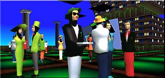

|  | ||
|
||
Colony City is an ambitious project, we intend to create one of the most compelling multi-user VR community on the Internet but a community can only be as good and compelling as its members, so in essence this is your place and we are there to service you. We are working hard on adding new places, planning future expansion but your voice is very important for that. Right now we need some volunteers, people to take jobs in the community and being active citizens. In the next few weeks we will be starting some elections so that a proper structure exist within the community.
To start with, this magazine will be a weekly issue. To make it truly your magazine, feel free to contribute, send us news, announcements, write an article, etc...
The magazine is composed of 6 sections, more can be added in the future if you wish to do so.
1. What’s New
This section will cover news in Colony City that are pertinent to the community, this can be new features, coverage of something that happened in the community...well..you know what news is! This is actually going to be this page but for right now we needed to explain a bit more what this magazine is all about.
2. Announcements
This section will be related to announcements for the community and its members...what’s coming up, new worlds, things being worked on, etc...
3. Jobs in town
Want to earn more money? Need to buy a better house? Want to buy a robot for your house? We have plenty of jobs available in town, this section will cover all the various jobs available in town.
4. Your voice
Let us know what you think, let others know what you think, this is your magazine too and we’ll include your opinion!
5. Activities /Events
Lots of things happen in a community, new artists exhibiting in the museum, someone’s birthday, a party in the cafe, a discussion group and so much more...this is where you know what’s going on in town.
6. Article
Each week a new article. If you feel like being a writer..why don’t you write one and send it to us! The only criteria is that it should be related to this community. Example of possible articles: Living in Cyberspace, Netiquette in a Virtual World, etc...your imagination is the limit!